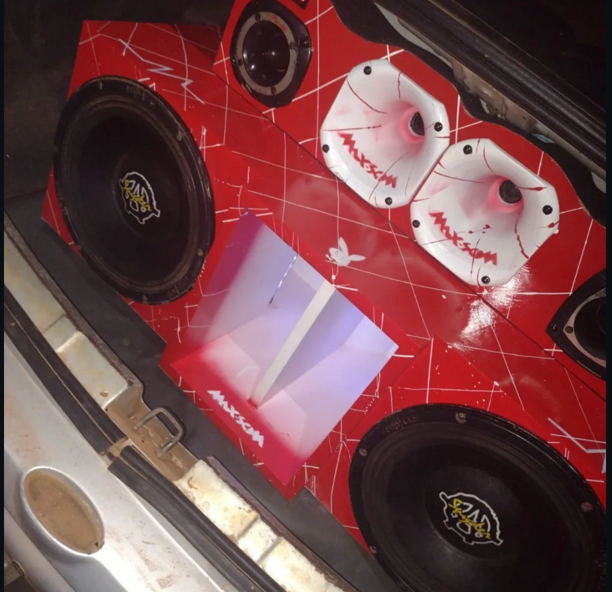
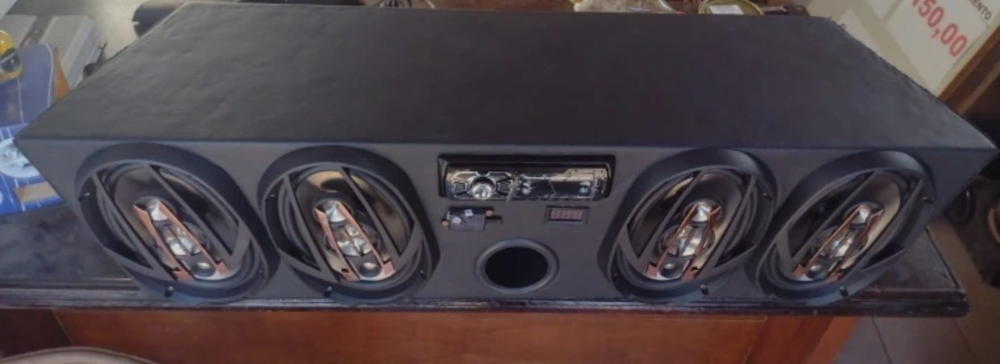
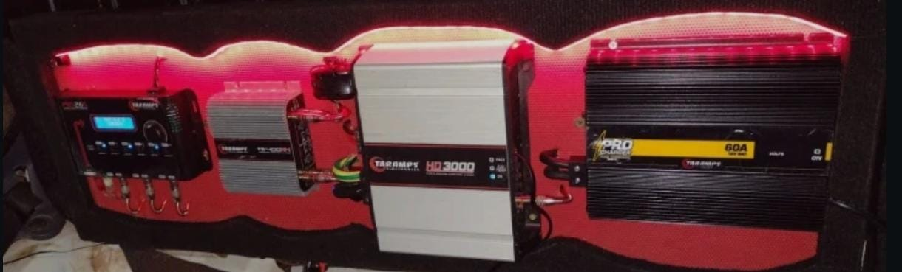
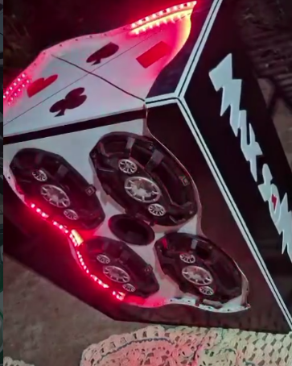

AUTOMOTIVO
Som automotivo
Conheça soluções de som automotivo para diferentes tipos de veículos e projetos.
Quero saber mais →Explore projetos de som automotivo, instalações e outras soluções desenvolvidas pela Max Som.
Conheça alguns exemplos de projetos e entre em contato com a equipe para esclarecer suas dúvidas.

Conheça soluções de som automotivo para diferentes tipos de veículos e projetos.
Quero saber mais →
Soluções de áudio para aplicações náuticas, conforme as necessidades de cada projeto.
Quero saber mais →
Organização e instalação de equipamentos para compor cada solução de áudio.
Quero saber mais →
Orientação e atendimento técnico para dúvidas relacionadas aos equipamentos.
Quero saber mais →Entre em contato com a equipe e explique o que você precisa.